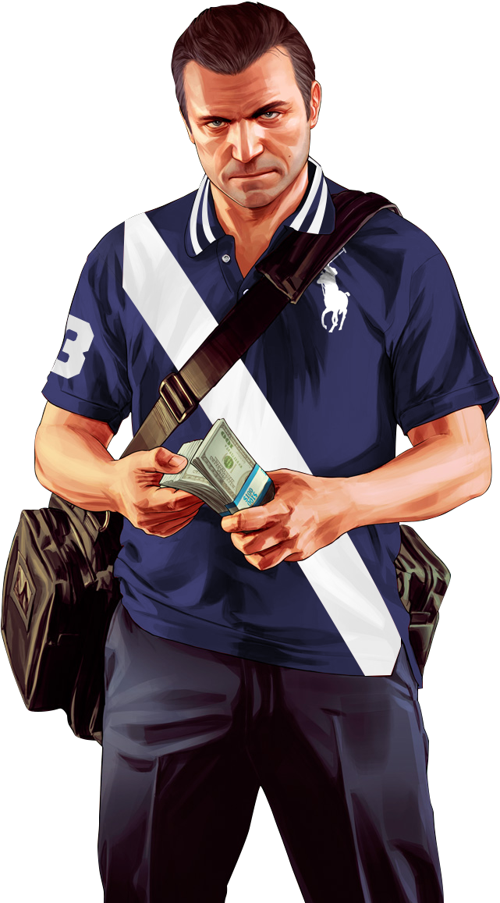
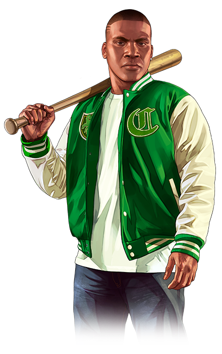
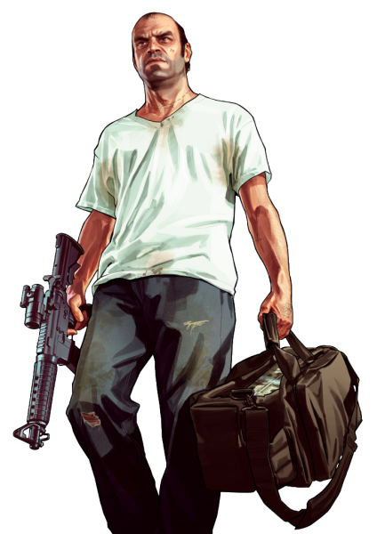

The Trailer
About The Game

When a young street hustler, a retired bank robber and a terrifying psychopath find
themselves entangled
with some of the most frightening and deranged elements of the criminal underworld, the U.S. government
and the entertainment industry, they must pull off a series of dangerous heists to survive in a ruthless
city in which they can trust nobody, least of all each other. GTA 5 for PC offers players the option to
explore the award-winning world of Los Santos and Blaine County in resolutions of up to 4k and beyond,
as well as the chance to experience the game running at 60 frames per second. The game offers players a
huge range of PC-specific customization options, including over 25 separate configurable settings for
texture quality, shaders, tessellation, anti-aliasing and more, as well as support and extensive
customization for mouse and keyboard controls. Additional options include a population density slider to
control car and pedestrian traffic, as well as dual and triple monitor support, 3D compatibility, and
plug-and-play controller support.
MICHAL
FRANKLIN
TREVOR
MICHAEL DE SANTA

Michael is a former bank robber and career criminal who faked his death to retire and live a
peaceful life with his family in Los Santos. However, his unhealthy relationship with them takes its
toll and he soon gets pulled back into his criminal life, forcing him to return to his old ways.
Michael's story centers around how his seemingly idyllic and halcyon lifestyle is halted as his past
demons and morally dubious lifestyle choices come back to haunt him.
FRANKLIN CLINTON

Franklin was born and lived his entire life in Los Santos. He became a gangbanger at a young age
and joined the Chamberlain Gangster Families alongside his best friend Lamar Davis, committing
various small crimes for a living. They and their fellow CGF homies from Forum Drive would later
form the independent Forum Gangsters to stay away from CGF's "retro gangster" nonsense. Franklin's
story revolves around his desire to become something more and make something of himself, which he
succeeds when he meets Michael, who becomes a mentor figure to him and recruits him in all of his
robberies and various jobs for other criminals, leading to Franklin's eventual success and wealth.
Franklin also befriends the third protagonist, Trevor, who, although not as close to him as Michael,
still becomes somewhat of a mentor for him.
TREVOR PHILIPS

Trevor is a career criminal and former bank robber with a complicated past, who later founded his
own company, Trevor Philips Enterprises, operating with drug dealing and weapon smuggling in Blaine
County. He is friends with Ron Jakowski and Wade Hebert, who work for his company, as well as the
oldest and best friend of Michael, whom he believed to be dead for almost a decade after he faked
his death to retire from the criminal life. Trevor is known to have a generally reckless and very
aggressive behavior, but he is also very loyal and deeply respects all those close to him. Trevor's
story focuses on how his actions have consequences on both himself and his friends, and him coming
to terms with Michael's past actions. Trevor later also befriends the third protagonist, Franklin,
becoming somewhat of a mentor figure to him.